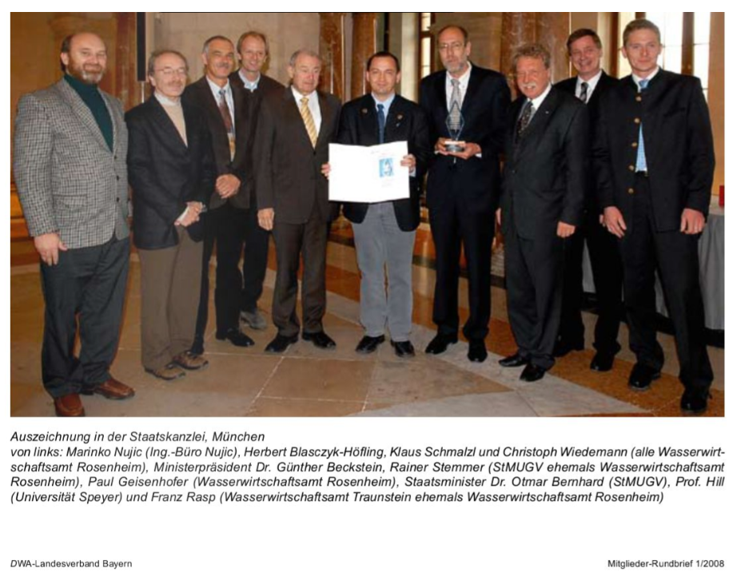

About Us
The engineering office Dr. Nujic was founded in Germany in 1999. As a specialized office for flow modeling, we have worked on numerous projects over the past 20 years and developed various models for use in water management, including Hydro_AS-2D, Hydro_GS-2D, Hydro_FT-2D, Laser_AS-2D, flow network generator, etc. Since then, more than 400 hundred institutions worldwide have successfully implemented the models.
Since 2012. we only deal with software development. So we worked on a GPU version in the period from 2012 to 2014 in the hope that we would be able to create a faster model. Unfortunately, the GPU version did not produce the desired result after its completion. Shortly afterwards, the previously mentioned models were sold to the Hydrotec company in 2014. From then on, they will further develop and market them.
Since then, we have been working on a new generation of flow models (called H_SIM), which, thanks to an implicit approach and high parallelization and vectorization / HPC, enable fast calculations.
The engineering office Dr. Nujic in Germany was closed at the end of 2017. A little after that, IB-NUJIC j.d.o.o. was opened in Croatia. The office now exists as a family business:
- Dr.-Ing. Marinko Nujić
- Dipl. Mat. / Phys. Kinga Nujić
- Kristina Nujić (IT student)
- Katarina Nujić (IT student)

Services
- Software development
- Schooling
- Technical Support
- Consulting
-
Flow and sediment transport modeling
- Webdesign